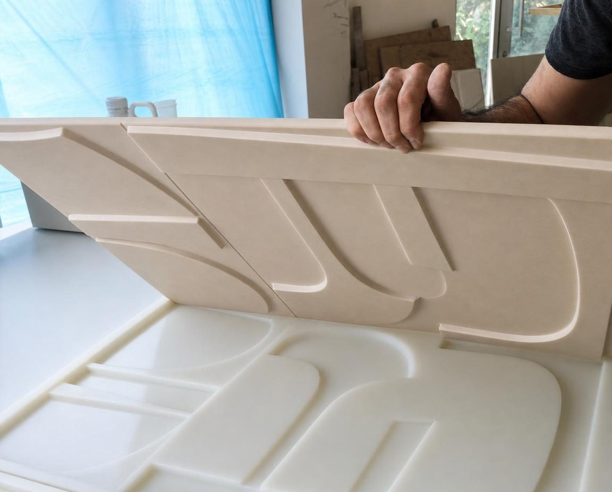
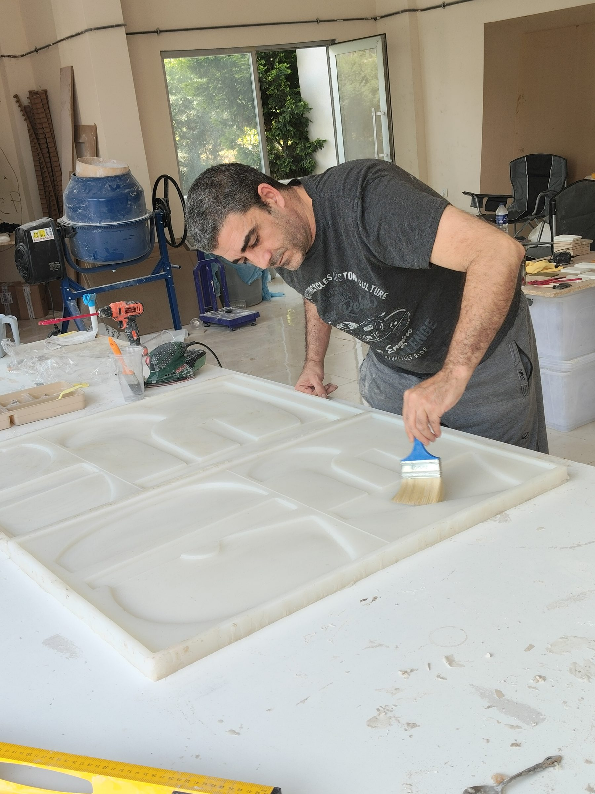
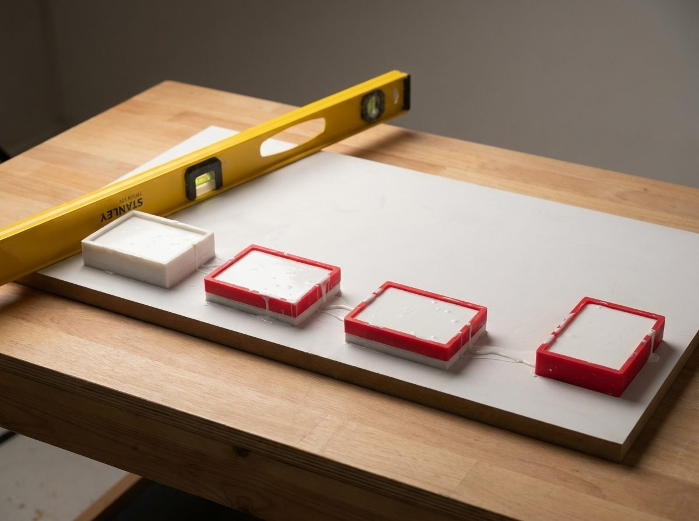
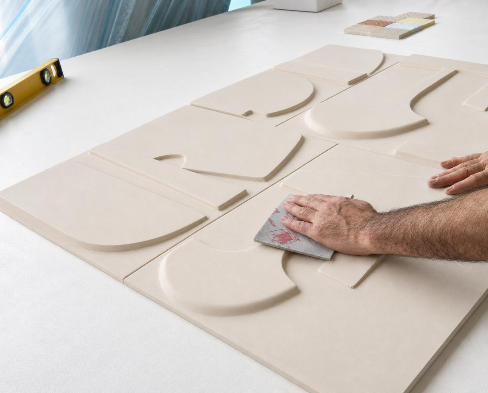

From drawing to mould, in one workshop.
Our Sapanca workshop offers two ways to a relief wall: Bespoke, cast from your drawing, or one of the Studio Designs we have drawn.

A prototype is where a drawing becomes an object
Our founder, Burak Tanlak, has spent more than twenty years founding product companies, always where formulation, manufacturing and brand meet. Whatever the product, an idea on paper has to become an object that can be tested and made again. That work is prototyping, and Studio Luminant is the same craft applied to walls: for a relief wall, the drawing becomes a depth map first, then a master.
A workshop in Sapanca, 2018 to 2024
From 2018 to 2024 Burak ran a maker workshop in Sapanca: additive manufacturing with FDM and resin printing, silicone mould-making, casting and material formulation. Printing a master, making the mould, casting from it and adjusting the material all happened in one place, so a change was made wherever it was needed, at the bench. The mould, casting and material know-how the studio draws on began there.

The idea: keep the know-how in the workshop
Studio Luminant, founded in 2025, takes that way of working into architecture. The technical know-how stays in the workshop, from the drawing to the mould. In Bespoke work the steps run: a drawing, a depth map, the master, the silicone mould, hand-casting, the artisan finish. Because it all sits in one place, a drawing passes through few hands before it becomes a mould, and whoever changes it knows what the change does to the master and the mould. The result is a production model that is flexible and agile. Flexible: runs can be short, decisions are made at the bench. Agile: casting and installation are in experienced hands.

Two doors, one workshop
Every wall begins as a drawing: yours or ours. Bespoke is for your drawing, cast faithfully: you send a sketch or a dimensioned drawing and approve a render of the model first. Studio Designs is relief we have drawn, offered in its listed sizes. Whoever drew it, the same team, the same workshop: Sapanca.

Today: a studio led by its founder
Studio Luminant is led by its founder, Burak Tanlak, and works with an experienced casting and installation team. Burak leads the design and the technical development and is your contact from the first sketch to the contract. Installation is quoted as a separate line for each project.
Have a sketch or a dimensioned drawing? Start with Bespoke. Want to see our own designs? Start with Studio Designs.